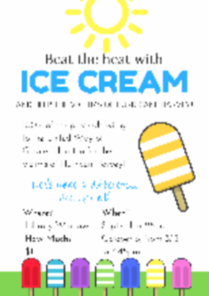

When I was in 8th grade I was also in track and field. I was also in a club where I mentored a 6th grader who was struggling. We would meet once or twice a week to go over anything they were strugging with anything. We would also help them keep track of missing assignments, quizzes, and tests. Some sports that I am involved in are swimming and badminton. I am interested in long boarding and Korean and taught myself how to longboard and the korean characters. I also play the piano and have received the Piano Merit Test Certification for 5 years. I have also received the honor roll all 4 times in my 8th grade year.
So far I don't have a job that I am definite on but many I am intersted in. I am interested in becoming either a 3D animator, an environmental engineer, a programmer, a zoologist, or a ___. I believe that all of these jobs will need coding skills. By taking this Project Lead the Way course I hope to not only learn and better my skills in programming, but narrow down my carrer choices to find one I would be the most interested, and best fitted for.
I am creative and have experience using softwares like Procreate for drawing. I also have some coding skills and can write in HTML, Python, and CSS. Although I don’t have much experience with coding I am learning more about coding through Codecademy and a coding app called Mimo.
In middle school I was a member of the California Scholarship and participated in a popsicle fundraiser, two flea markets, our Spoken Word Night, our school’s Fallon Night Live, and track meet fundraisers. So far, in my freshman year I have created blessings for backpacks for a club called Students Taking Active Roles Club. I have also created a poster for the Give Light Club and have volunteered at Fertile GroundWorks. 